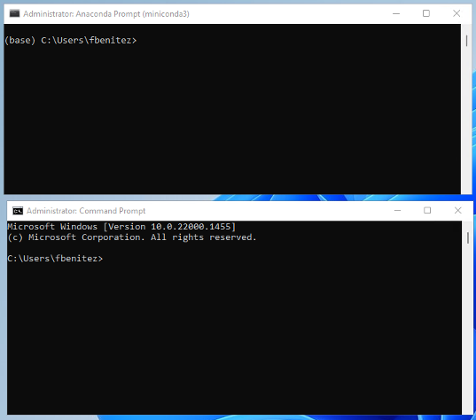
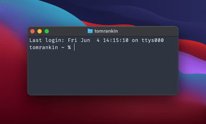
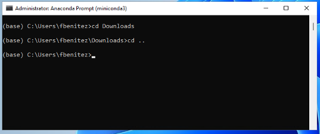
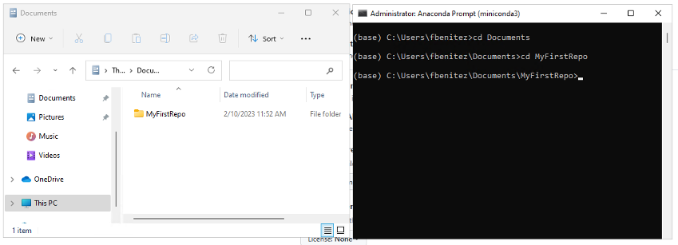
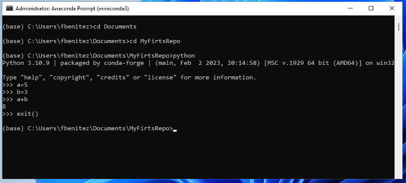

%%| fig-cap: "Version Control Timeline"
%%| fig-align: center
%%| fig-responsive: false
gitGraph TB:
commit id: "Initial spatial analysis"
commit id: "Add coordinate system"
branch develop
commit id: "Fix projection error"
commit id: "start documentation"
checkout main
commit id: "map analysis"
merge develop id: "Pull Request"
commit id: "Add buffer analysis"
commit id: "Final report"
Step 2. Introduction to GIT
What is Version Control?
Version control is a system that records changes to files over time so that you can recall specific versions later. Think of it as a detailed history of your project that allows you to:
- Track every change made to your files
- Revert to previous versions when needed
- Collaborate with others without conflicts
- Understand who made what changes and when
Estimated time to install: 40 minutes.
Why Version Control Matters in Spatial Data Science
In spatial data science, you’re often working with:
- Complex datasets: Shapefiles, rasters, GPS data, satellite imagery
- Multiple software tools: R, Python, QGIS, ArcGIS
- Iterative analysis: Testing different spatial models and parameters
- Collaborative projects: Working with field teams, other researchers
- Reproducible research: Ensuring your spatial analysis can be replicated
Common scenario
Imagine you’re analyzing urban green spaces for any kind of project using R, and then you have something like:
urban_greenspace_analysis.R urban_greenspace_analysis_v2.R urban_greenspace_analysis_v2_final.R urban_greenspace_analysis_v2_final_ACTUALLY_FINAL.R urban_greenspace_analysis_v2_final_ACTUALLY_FINAL_supervisors_comments.R
Sound familiar? This approach leads to:
Confusion about which version is current
Lost work when files get overwritten
Difficulty tracking what changed between versions
Problems when collaborating with others
Git and GitHub
Another important component we need in our environment is git, the tool that provides version control for any of our projects. While version control is a systematic approach to recording changes you make in a file or set of files over time.
This is important, especially if you work with other collaborators, as you can track the history, see what changed and recall specific versions if needed. In this course, we will incorporate git to teach you how to create a branch, clone someone else’s repositories, and give you a brief introduction to this important workflow, but also how you can commit your progress in one of the most popular git tools currently available. GitHub.
Key Terminology
- Repository (repo): A folder containing your project files and their complete history
- Commit: A snapshot of your project at a specific point in time
- Remote: A version of your repository stored on a server (like GitHub)
- Clone: Creating a local copy of a remote repository
- Push: Sending your local changes to the remote repository
- Pull: Retrieving changes from the remote repository to your local copy
The Git Workflow
flowchart TD
A[Working Directory<br/>Your project files] --> |Initial command| B[git add]
B --> C[Staging Area<br/>Files ready to commit]
C --> |next command| D[git commit]
D --> E[Local Repository<br/>Your project history]
E --> |final command| F[git push]
F --> G[Remote Repository<br/>GitHub]
G --> |Do this before start Working| H[git pull]
H --> A
Get familiar with the Command Prompt or Terminal.
Before we continue with the installations and configurations, for the purpose of these labs, you need to get familiar with this interface and, more importantly, feel comfortable using them. In the following instructions, I will describe some steps to guide you in using the Command prompt/Terminal.
There are certain differences in the commands you will use in
windows and macOS; make sure you test those commands and get the appropriate outcome.

Commands to move through drives and directories:
cd—Short for “change directory”, to move through the directory structure (in the same drive), as in cd C:\Users\fbenitez\Downloads
cd.. —to move to the upper level in your directories, so if you need to move from C:\Users\fbenitez\Downloads to C:\Users\fbenitez\

X: —To switch to a different drive, type the drive name followed by colon, as in D: to switch to drive D:\
cls (Windows) or clear (macOS) —To clean your terminal, it would help you to have a clean terminal and avoid mistakes.
dir(windows)
ls (macOs) —To list current directory contents.
- Go to your Documents folder in your computer. Create a folder call it MyFirstRepo
- Open a terminal/command prompt, browse from the folder you are in to the new one, like the following illustrations.

You can also use some commands to run programs in your system which I know sounds silly as we are used to finding the icon and tap/click to get it open, but that’s what happens underneath every time you open a program, here are some examples:
python —Starting the python command line interface, you can use the exit() command to get out of the python interface, and recover the terminal mode.
Try the example illustrated in the following image:

Step 1: Creating a GitHub Account
Now, let’s create your own GitHub Account. GitHub1 is a web-based platform that hosts Git repositories, providing developers with tools for version control and collaboration. It combines Git, a powerful version control system, with features that facilitate collaboration and project management.
1.1 Sign Up for GitHub
- Go to github.com
- Click “Sign up”
- Choose a username (take a note of this as you will use it later in this Lab)
- Use your university email address ideally., but you can opt to use another email, just recall it when you need to recover your password. (take a note of this as you will use it later in this Lab)
- Create a strong password
- Verify your account
1.2 Configure Your Profile
There is a chance you won’t open GitHub for anything else than this course, but also there is another chance where you will ended up working as spatial data scientist, or consultant into a collaborative development team. If that is your case, improving and configuring your GitHub account, as well as familiarizing about how it works would be definitively beneficial for you. For instance there are lot of companies or institutions who are asking or expecting you to have some well-curated repositories that prove your skills in Python and GitHub. Thus take some time to enhance your profile by adding this little extra information.
- Add a profile picture
- Add a bio mentioning your interest in spatial data science
- Include your university affiliation
- Consider making your profile public for academic networking
Step 2: Installing and Configuring Git
Git2 is a distributed version control system used to track changes in source code during software development. It helps multiple developers collaborate on a project by managing changes to files and coordinating work on those files.
2.1 Installing Git
Windows
- Download Git from git-scm.com
- Run the installer
- Use default settings (recommended)
- Choose “Git Bash” as your terminal
macOS
- Install via Homebrew:
brew install git - Or download from git-scm.com
Linux
# Ubuntu/Debian
sudo apt-get install git
# CentOS/RHEL
sudo yum install git2.2 Initial Git Configuration
Open your terminal (Git Bash on Windows, Terminal on macOS/Linux) and run:
# Set your name (use your real name)
git config --global user.name "Your Name"
# Set your email (use your GitHub email)
git config --global user.email "your.email@st-andrews.ac.uk"
# Verify configuration
git config --listStep 3: Creating Your First Local Repository
3.1 Setting Up a Project Structure
Now, in order to practice and validate that Git has been properly installed, let’s create a fictional spatial data science project for analyzing urban heat islands, but let’s try to use the terminal or the command prompt windows to practice.
- Open a Terminal or Command prompt and run the following commands.
# Create project directory
mkdir urban_heat_island_analysis
cd urban_heat_island_analysis
# Create typical spatial data science structure
mkdir data
mkdir data/raw
mkdir data/processed
mkdir scripts
mkdir outputs
mkdir docs3.2 Initialize Git Repository
# Initialize git repository
git initThis creates a hidden .git folder that stores all version control information.
3.3 Create Project Files
We will generate several files within this pilot project, so you can see how the repo can evolve and changes over time in the same way it happens when you work on a real project. The first file you need is the README which helps to describe what your project or repo is about.
Create a README file:
# Create README.md
touch README.mdOpen the README.md file and add content:
# Urban Heat Island Analysis
## Project Overview
This project analyzes urban heat island effects in [Your City] using satellite thermal data and land cover classifications.
## Data Sources
- Landsat 8 thermal infrared data
- OpenStreetMap building footprints
- Local weather station data
## Methods
- Temperature retrieval from satellite imagery
- Spatial interpolation techniques
- Statistical analysis of temperature patterns
## Software Requirements
- R (version 4.0+)
- Required packages: sf, terra, ggplot2, dplyr
## File Structure
urban_heat_island_analysis/
├── data/
│├── raw/ # Original data files
│└── processed/ # Cleaned and processed data
├── scripts/ # R scripts for analysis
├── outputs/ # Maps, plots, and results
└── docs/ # Documentation and reports
## Contact
[Your Name] - [Your Email] Create a .gitignore file:
Warning: This is a very essential and relevant step when you work with repositories, in particular when working with spatial data science as we usually have to deal with large datasets, however cloud platforms –Github have storage limitations (e.g 50MB, 100MG). Sometimes also the jupyter notebooks can weight more than the storage limitations given by github. Therefore is super IMPORTANT that you create a file that tells your local repo to ignore those big files so you don’t have any trouble when you push the files to the cloud.
touch .gitignoreOpen the .gitignore file and add common files to ignore, you could add more later, or you can also add entire folders:
# R files
.Rproj.user
.Rhistory
.RData
.Ruserdata
*.Rproj
# Data files (large files)
*.tif
*.shp
*.dbf
*.prj
*.shx
*.zip
# Temporary files
*~
*.tmp
*.temp
# OS files
.DS_Store
Thumbs.db
# Log files
*.log3.4 Your First Commit
# Check status
git status
# Add files to staging area
git add README.md
git add .gitignore
# Or add all files
git add .
# Commit with descriptive message
git commit -m "Initial commit: Add project structure and README"Step 4: Connecting Local Repository to GitHub
4.1 Create GitHub Repository
- Log in to github.com
- Click the “+” icon in the top right
- Select “New repository”
- Repository name:
urban_heat_island_analysis - Description: “GG3209 pilot project to analyzing urban heat island effects”
- Keep it public (for academic sharing)
- Don’t initialize with README (we already have one)
- Click “Create repository”
4.2 Connect Local Repository to GitHub
GitHub will show you commands to run. Copy and paste these into your terminal:
# Add GitHub as remote origin
git remote add origin https://github.com/yourusername/urban_heat_island_analysis.git #Replace this URL with YOUR URL.
# Verify remote connection
git remote -v
# Push your local repository to GitHub
git push -u origin main4.3 Verify Connection
- Refresh your GitHub repository page
- You should see your README.md and .gitignore files
- Your commit message should be visible
Step 5: Essential Git Commands for Daily Use
5.1 The Basic Workflow
flowchart TD
A[Edit Files] --> B[git pull]
B --> C[git status]
C --> D[git add]
D --> E[git commit]
E --> F[git push]
F --> G[Continue Working]
G --> A
It is a bit complicated to understand what is underneath all this commands, so the following sequence-diagram represents how information, in particular how the modifications of your files moves around the version control system, thus it is easier for you to understand why do we need to run several commands when we use git.
Initially you have three folders. One is called Your Folder (this is where all your project are located, eg. Lab No 1, GG3209, etc), then you have a Local repo (a hidden folder that include all the components of version control or git) and finally the Cloud Repo, which is a folder located in the Cloud (e.g GitHub). The goal is to make sure we have all our editions sync and safe in the Cloud, so if eventually our computers breaks, we have a safe and updated copy of our project stored in the Cloud.
This is how a traditional workflow looks like when you work with Git and GitHub, study the steps and make sure you understand what the role of each command is. I expect you to work using these commands during the labs of this module.
sequenceDiagram
loop
autonumber
Your Folder->>+Local Repo: git status
Note right of Your Folder: Report All Changes
Your Folder->>+Local Repo: git add
Note right of Your Folder: Add all changes<br/>to the staging area
Your Folder->>+Local Repo: git commit
Note right of Your Folder: Include all the files<br/>to the local repo
Local Repo->>+Cloud Repo: git push
Note right of Local Repo: upload all changes <br/>to the Cloud repo
Local Repo->>+Cloud Repo: git pull
Cloud Repo-->>-Local Repo: pull changes<br/>included in the cloud
Note over Cloud Repo,Your Folder: Fetch lastest changes
end
5.2 Checking Status and History
# Check what files have changed
git status
# View commit history
git log
# View commit history (compact)
git log --oneline
# View changes in files
git diff5.3 Adding and Committing Changes
Let’s add a spatial analysis script:
# Create new R script
touch scripts/temperature_analysis.RAdd some content to scripts/temperature_analysis.R:
# Urban Heat Island Analysis
# GG3209 - Spatial Data Science
# Author: [Your Name]
# Date: [Current Date]
# Load required packages
library(sf)
library(terra)
library(ggplot2)
library(dplyr)
# Read temperature data
# temp_data <- rast("data/raw/landsat_thermal.tif")
# Read city boundary
# city_boundary <- st_read("data/raw/city_boundary.shp")
# TODO: Add temperature extraction analysis
# TODO: Add spatial interpolation
# TODO: Create temperature mapsNow commit these changes:
# Add the new script
git add scripts/temperature_analysis.R
# Commit with descriptive message
git commit -m "Add initial temperature analysis script
- Set up basic structure for thermal analysis
- Added required package imports
- Created placeholders for main analysis steps"
# Push to GitHub
git push origin main5.4 Working with Multiple Files
Add more project files:
# Create data processing script
touch scripts/data_preprocessing.R
# Create visualization script
touch scripts/create_maps.R
# Add all new files
git add scripts/
# Commit all changes
git commit -m "Add data preprocessing and mapping scripts"
# Push to GitHub
git push origin main5.5 Viewing and Understanding Changes
# See what changed in your last commit
git show
# Compare current files with last commit
git diff HEAD~1
# See changes in a specific file
git diff scripts/temperature_analysis.RStep 6: Collaboration Workflow
6.1 Cloning an Existing Repository
When joining a collaborative project:
# Clone a repository
git clone https://github.com/username/repository-name.git
# Navigate to the cloned directory
cd repository-name6.2 Keeping Your Local Repository Updated
# Fetch latest changes from GitHub
git pull origin main
# This is equivalent to:
git fetch origin main
git merge origin/main6.3 Best Practices for Collaboration
- Always pull before starting work:
git pull origin main- Make small, frequent commits:
git add specific_file.R
git commit -m "Fix coordinate system transformation bug"- Write clear commit messages:
# Good commit messages
git commit -m "Add buffer analysis for green spaces"
git commit -m "Fix projection error in temperature raster"
git commit -m "Update README with data sources"
# Poor commit messages (avoid these)
git commit -m "stuff"
git commit -m "fixes"
git commit -m "work"Step 7: Handling Common Scenarios In Spatial Data Science
7.1 Working with Large Data Files
Spatial data files can be very large. Use .gitignore to exclude them:
# Add to .gitignore
echo "*.tif" >> .gitignore
echo "*.shp" >> .gitignore
echo "*.nc" >> .gitignore
echo "data/raw/*" >> .gitignore
# Commit the updated .gitignore
git add .gitignore
git commit -m "Update gitignore for large spatial data files"7.2 Documenting Data Sources
Create a data documentation file:
touch docs/data_sources.mdAdd comprehensive data documentation:
# Data Sources
## Landsat 8 Thermal Data
- **Source**: USGS EarthExplorer
- **Date**: 2023-07-15
- **Scene ID**: LC08_L1TP_015033_20230715_20230725_02_T1
- **Spatial Resolution**: 30m
- **Bands Used**: Band 10 (Thermal Infrared)
## City Boundary
- **Source**: OpenStreetMap
- **Downloaded**: 2023-08-01
- **Format**: Shapefile
- **Coordinate System**: WGS84 UTM Zone 33N
## Weather Station Data
- **Source**: Local Meteorological Service
- **Period**: 2023-07-01 to 2023-07-31
- **Variables**: Temperature, Humidity, Wind Speed
- **Temporal Resolution**: Hourly7.3 Version Control for Analysis Results
Track your analysis outputs:
# Create results summary
touch outputs/analysis_summary.md
# Add and commit
git add outputs/analysis_summary.md
git commit -m "Add initial analysis summary template"Step 8: Advanced Git Commands
8.1 Viewing Detailed History
# View detailed log with file changes
git log --stat
# View graphical representation
git log --graph --oneline --all
# View commits by specific author
git log --author="Your Name"
# View commits in date range
git log --since="2023-08-01" --until="2023-08-31"8.2 Comparing Versions
# Compare two commits
git diff commit1..commit2
# Compare current version with specific commit
git diff HEAD~3
# Compare specific files between commits
git diff HEAD~1 scripts/temperature_analysis.R8.3 Reverting Changes
# Undo changes in working directory
git checkout -- filename.R
# Undo last commit (keep changes)
git reset --soft HEAD~1
# Undo last commit (discard changes)
git reset --hard HEAD~1Warning: Be careful with --hard reset as it permanently deletes changes!
Step 9: GitHub Features Common for Academic Work
9.1 Using Issues for Project Management
- Go to your GitHub repository
- Click “Issues” tab
- Click “New issue”
- Create issues for different analysis tasks:
- “Download and process Landsat data”
- “Implement temperature calculation algorithm”
- “Create heat island visualization”
9.2 Using GitHub for Documentation
Create comprehensive documentation:
# Create documentation files
mkdir docs
touch docs/methodology.md
touch docs/results.md
touch docs/conclusions.md9.3 Making Your Repository Citation-Ready
Add citation information:
touch CITATION.cffAdd citation content:
cff-version: 1.2.0
message: "If you use this software, please cite it as below."
authors:
- family-names: "Your Last Name"
given-names: "Your First Name"
orcid: "https://orcid.org/0000-0000-0000-0000"
title: "Urban Heat Island Analysis"
version: 1.0.0
date-released: 2023-12-01
url: "https://github.com/yourusername/urban_heat_island_analysis"Step 10: Reproducibility Best Practices
10.1 Creating a Complete Reproducible Environment
Document your R environment:
touch scripts/setup_environment.RAdd environment setup code:
# Setup Environment for Urban Heat Island Analysis
# GG3209 - Spatial Data Science
# Install required packages
required_packages <- c(
"sf", # Spatial data handling
"terra", # Raster data processing
"ggplot2", # Plotting
"dplyr", # Data manipulation
"leaflet", # Interactive maps
"RColorBrewer", # Color palettes
"rmarkdown" # Report generation
)
# Install missing packages
new_packages <- required_packages[!(required_packages %in% installed.packages()[,"Package"])]
if(length(new_packages)) install.packages(new_packages)
# Load all packages
lapply(required_packages, library, character.only = TRUE)
# Print session info for reproducibility
sessionInfo()10.2 Creating Analysis Workflows
Document your complete workflow:
touch scripts/main_analysis.RAdd workflow documentation:
# Main Analysis Workflow
# Run this script to reproduce the complete analysis
# Step 1: Setup environment
source("scripts/setup_environment.R")
# Step 2: Data preprocessing
source("scripts/data_preprocessing.R")
# Step 3: Temperature analysis
source("scripts/temperature_analysis.R")
# Step 4: Create visualizations
source("scripts/create_maps.R")
# Step 5: Generate report
# rmarkdown::render("docs/final_report.Rmd")
cat("Analysis complete! Check the outputs/ folder for results.\n")10.3 Version Control for Reproducibility
# Commit your reproducible workflow
git add scripts/setup_environment.R
git add scripts/main_analysis.R
git commit -m "Add reproducible analysis workflow
- Created environment setup script
- Added main analysis workflow
- Documented all required packages
- Added session info for reproducibility"
git push origin mainCommon Git Commands Reference
Essential Commands
| Command | Purpose | Example |
|---|---|---|
git status |
Check current status | git status |
git add |
Stage changes | git add filename.R |
git commit |
Save changes | git commit -m "message" |
git push |
Upload to GitHub | git push origin main |
git pull |
Download from GitHub | git pull origin main |
git log |
View history | git log --oneline |
git diff |
View changes | git diff filename.R |
Configuration Commands
| Command | Purpose | Example |
|---|---|---|
git config --global user.name |
Set name | git config --global user.name "John Doe" |
git config --global user.email |
Set email | git config --global user.email "john@example.com" |
git remote add origin |
Add remote | git remote add origin https://github.com/user/repo.git |
Troubleshooting Common Issues
Issue 1: “Permission denied” when pushing
Solution: Check your GitHub authentication
# For HTTPS (recommended)
git remote set-url origin https://github.com/username/repository.git
# Enter your GitHub username and personal access token when promptedIssue 2: “Your branch is behind” message
Solution: Pull the latest changes first
git pull origin main
# Then push your changes
git push origin mainIssue 3: Accidentally committed large files
Solution: Remove from tracking
# Remove file from git but keep local copy
git rm --cached large_file.tif
# Add to .gitignore
echo "large_file.tif" >> .gitignore
# Commit the changes
git add .gitignore
git commit -m "Remove large file from tracking"Issue 4: Want to undo the last commit
Solution: Use reset
# Keep changes but undo commit
git reset --soft HEAD~1
# Discard changes and undo commit (be careful!)
git reset --hard HEAD~1Additional Resources
Official Documentation
Spatial Data Science with Git
Academic Resources
- Software Carpentry Git Lesson
- Pro Git Book (free online)
This guide was created for the GG3209 Spatial Analysis with GIS students at SGSD University of St Andrews. For questions or suggestions, please create an issue in this book repository. 2025